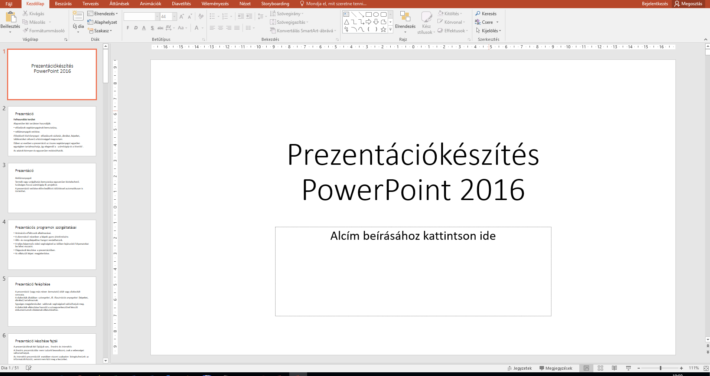

Prezentáció készítése
Ez a kurzus az Prezentáció készítése alapjait tartalmazza.
Tartalom
- Prezentációs programok szolgaltatásai
- Prezentáció felépítése
- Prezentáció készítése fajtái
- Szöveg és objektum elhelyezése
- Formázás automatikus eszközökkel
- Egyéni animáció
- Attűnés, időzítés
- Egyéni formátumok beállításai
- Hiperhivatkozás
- Kész prezentáció készítése